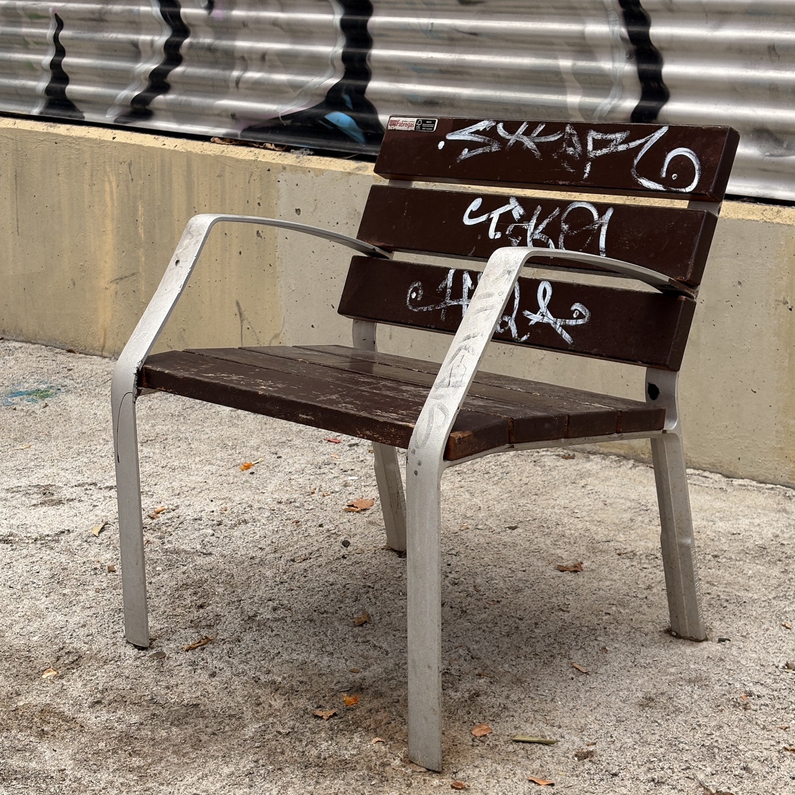

Photographed as found · Sants, Barcelona
Specimen SPC-017
Park Chair with Arms (Fabregas)
Materials
6 technical wood slats measuring 700x110x35 mm and ductile cast iron legs with a hammered finish
Measurements
Outside length 700.00 mm, Width 622.00 mm, Height 787.00 mm, arm width is 53 mm, seat depth is 460 mm
Notes
Fabregas product MODO08-0700-MT, with DWG and PDF dimensions:
https://grupfabregas.com/en/product/chair-modo08-in-cast-iron-and-technical-wood/
Branches
0 concepts filed against this specimen
No concepts filed yet — check back soon.

Maker Project Lab
Barcelona field archive
Barcelona field archive